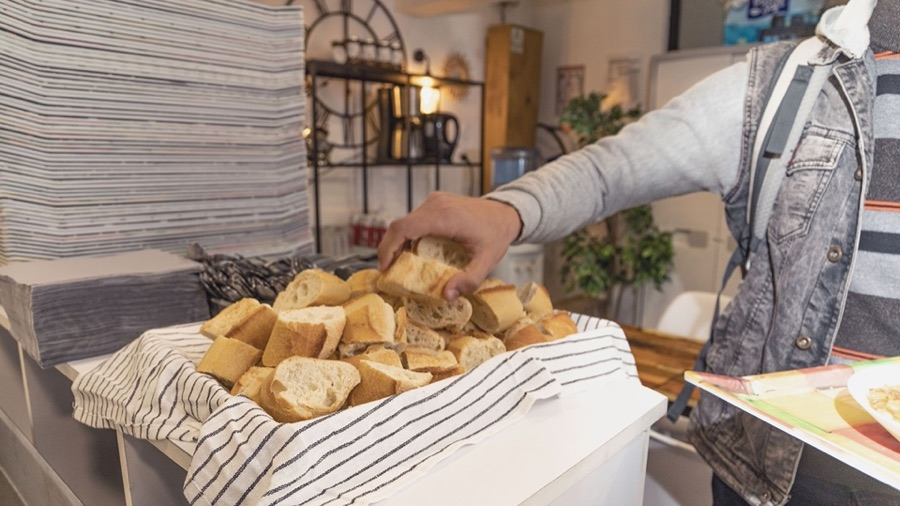
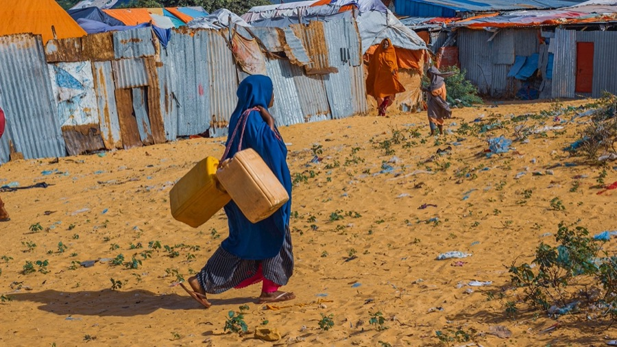
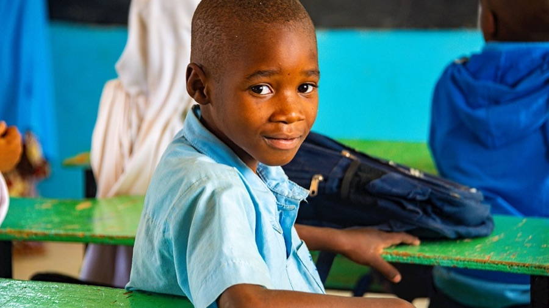
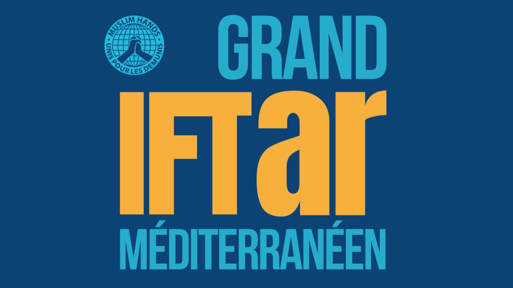
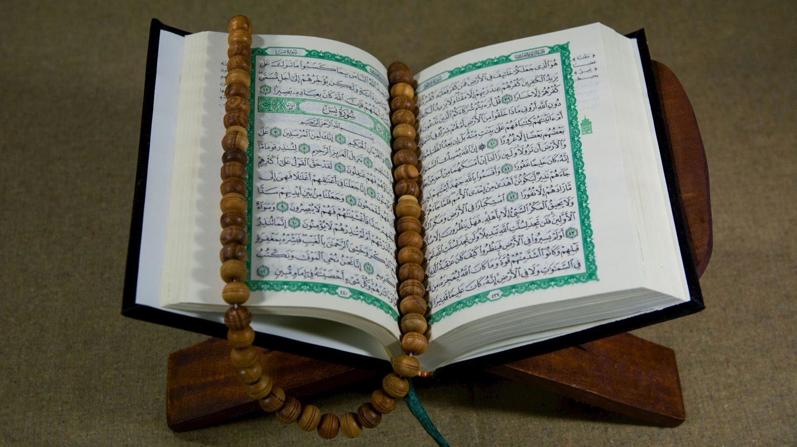

- 50 € : un colis qui nourrit une famille tout le mois
- Reçu fiscal immédiat : 100 € donnés vous coûtent 34 €
- Denrées achetées localement, distribuées par nos équipes
Quelles sont les dates du Ramadan 2027 en France ?
Le calcul astronomique place le premier jour de jeûne le lundi 8 février 2027 et le dernier le mardi 9 mars. La Nuit du doute confirme ces dates à partir de l'observation du croissant.
- 7 févrierNuit du doute : annonce officielle du début du mois par la Grande Mosquée de Paris.
- 8 févrierPremier jour de jeûne. Les premiers colis partent dès la première semaine.
- 27 févrierDébut des dix dernières nuits : dons automatisés pour ne manquer aucune nuit.
- 6 marsNuit du destin (27e nuit), la plus attendue de l'année.
- 9 ou 10 marsAïd el-Fitr : la zakat al fitr doit être versée avant la prière.
Dates prévisionnelles. La date officielle dépend de l'observation du croissant lunaire ; nous mettons cette page à jour le soir même de la Nuit du doute.
Que donner pendant le Ramadan 2027 ?
Chaque montant correspond à une action précise. Le reçu fiscal réduit votre coût réel de 66 %.

Colis alimentaire. Riz, farine, huile, sucre, dattes et légumineuses pour une famille de cinq pendant un mois, au Mali, au Niger, au Pakistan, au Yémen ou à Gaza.
Offrir un colis
Iftar à Gaza. Un repas chaud servi au coucher du soleil par nos cuisines communautaires aux familles déplacées. 30 € offrent dix iftars.
Offrir des iftars
Zakat al fitr. À verser avant la prière de l'Aïd, remise en nourriture aux familles démunies. 28 € pour un foyer de quatre.
Verser ma zakat al fitr
Fidya et kaffara. Fidya : 7 € par jour. Kaffara : 420 € par jour rompu volontairement, soit soixante repas. Comprendre la différence.
Régler ma fidya
Zakat al maal. Le Ramadan est le mois où la plupart des donateurs s'acquittent de leur zakat. Nisab du jour, calcul en deux minutes.
Calculer ma zakat
Dix dernières nuits. Programmez un montant par nuit : vous ne manquerez pas la Nuit du destin, même en voyage ou endormi.
Programmer mes dons
Chaque soir, un repas partagé.
120 000 iftars servis en 2026, de Gaza à Marseille. 3 € suffisent pour un repas chaud au coucher du soleil.
Offrir des iftarsRamadan en France : des iftars solidaires à Paris, Lyon et Marseille
Chaque soir du Ramadan, nos bénévoles servent des iftars aux personnes isolées et sans abri : au restaurant solidaire La Fourchette Fraternelle à Marseille, dans nos locaux de Saint-Ouen et avec nos partenaires à Lyon.
En 2026, 30 000 repas chauds ont été servis en France pendant le mois. Les iftars se prennent à table, dans la dignité, et se prolongent souvent par une orientation vers un hébergement ou un accompagnement administratif. Les maraudes du soir distribuent aussi des repas emballés et des dattes aux personnes qui ne peuvent pas se déplacer.
Un iftar en France : 5 €
Réduction d'impôt de 75 % pour l'aide alimentaire en France : 5 € vous coûtent 1,25 €.
Devenir bénévole
Service, cuisine, maraudes : 300 bénévoles mobilisés chaque Ramadan.
Fidya ou kaffara : quelle différence ?
Les deux compensent un jour de jeûne, mais pas pour la même raison. La fidya concerne la personne qui ne peut pas jeûner et ne pourra pas rattraper : maladie longue, grand âge, grossesse ou allaitement selon les avis. Elle consiste à nourrir une personne par jour manqué, soit 7 € par jour en 2027, ou 210 € pour un mois complet.
La kaffara est l'expiation d'un jour de jeûne rompu volontairement sans raison valable. Elle impose de nourrir soixante personnes, soit 420 € par jour. Nous la convertissons en repas et en colis distribués aux familles les plus pauvres de nos pays d'intervention. En cas de doute sur votre situation, demandez l'avis d'un imam : nous ne nous substituons pas à lui.

Mon don de Ramadan
50 € vous coûtent 17 € après réduction d'impôt de 66 %.
Je donne pour le RamadanPaiement sécurisé · reçu fiscal immédiat · bilan envoyé après l'Aïd
Zakat al maal et zakat al fitr : deux aumônes du Ramadan
La zakat al maal (zakât al-mâl) porte sur votre patrimoine : 2,5 % de l'épargne, de l'or, des placements et des stocks professionnels détenus depuis une année lunaire, dès qu'ils dépassent le nisab. Elle peut être réglée à tout moment, mais le Ramadan reste le mois où la plupart de nos donateurs la versent. Le calculateur applique le nisab du jour, 1 154 € sur la base de l'argent.
La zakat al fitr est due par personne, pour chaque membre du foyer, et doit être versée avant la prière de l'Aïd el-Fitr : 7 € en 2027. Nous recommandons de la verser dès le début du mois pour que la nourriture arrive à temps dans les villages.

Les dix dernières nuits et la Nuit du destin
Les dix dernières nuits du Ramadan commencent le 27 février 2027. Parmi elles se cache Laylat al-Qadr, la Nuit du destin, « meilleure que mille mois ». La tradition la situe le plus souvent la 27e nuit, soit le 6 mars 2027, mais personne ne la connaît avec certitude. C'est pourquoi nous proposons un don automatisé : vous fixez un montant par nuit, du 27 février au 8 mars, et nous le prélevons chaque soir. Vous pouvez augmenter le montant des nuits impaires et tout modifier jusqu'à la dernière minute.
Comment nous distribuons vos dons de Ramadan
Achat local
Les denrées sont achetées sur les marchés du pays, ce qui soutient les producteurs et évite le transport.
Familles identifiées
Veuves, familles d'orphelins, déplacés : les listes sont établies avec les comités de village et nos équipes.
Distribution
Colis remis en main propre dès la première semaine, iftars servis chaque soir jusqu'à l'Aïd.
Bilan
Chiffres, photos et pays publiés après l'Aïd, et envoyés par e-mail à chaque donateur.
Votre don de Ramadan et vos impôts
Muslim Hands France est une association d'intérêt général. Chaque don ouvre droit à une réduction d'impôt sur le revenu de 66 % : 100 € donnés vous coûtent 34 €, un colis de 50 € revient à 17 €. Les repas servis en France relèvent du taux de 75 % jusqu'à 2 000 € de dons par an. Le reçu fiscal est envoyé par e-mail immédiatement après le paiement, et un récapitulatif annuel vous est adressé avant la déclaration. Tout savoir sur la déduction fiscale.
Questions fréquentes sur le Ramadan 2027
Quand commence le Ramadan 2027 en France ?
Le lundi 8 février 2027 selon le calcul astronomique de la Grande Mosquée de Paris. La Nuit du doute du 7 février confirme la date. Le mois se termine le 9 mars et l'Aïd el-Fitr est attendu le 9 ou 10 mars 2027.
Combien coûte un colis alimentaire de Ramadan ?
50 €. Il nourrit une famille de cinq personnes pendant tout le mois : riz, farine, huile, sucre, dattes et légumineuses achetés sur les marchés locaux. Après réduction d'impôt, il vous coûte 17 €.
Quelle est la différence entre fidya et kaffara ?
La fidya compense un jour de jeûne que l'on ne pourra pas rattraper (maladie longue, grand âge, grossesse selon les avis) : nourrir une personne, soit 7 € par jour. La kaffara expie un jour de jeûne rompu volontairement : nourrir 60 personnes, soit 420 € par jour.
Quel est le montant de la zakat al fitr 2027 ?
7 € par personne du foyer, y compris les enfants et les nouveau-nés. Elle doit être versée avant la prière de l'Aïd el-Fitr, le 9 ou 10 mars 2027, et nous la distribuons en nourriture.
Puis-je verser ma zakat al maal pendant le Ramadan ?
Oui. Beaucoup de donateurs choisissent le Ramadan pour s'acquitter de leur zakat al maal, 2,5 % du patrimoine qui dépasse le nisab. Notre calculateur applique le nisab du jour et vous donne le montant en deux minutes.
Comment ne manquer aucune des dix dernières nuits ?
Programmez un don automatique par nuit du 27 février au 8 mars 2027 : vous choisissez le montant, nous le prélevons chaque soir avant le maghrib. La Nuit du destin, attendue le 6 mars, est ainsi couverte.
Mon don de Ramadan est-il déductible des impôts ?
Oui. Muslim Hands France est d'intérêt général : 66 % du don est déductible de l'impôt sur le revenu, 100 € donnés vous coûtent 34 €. Les repas servis en France relèvent du taux de 75 % jusqu'à 2 000 €. Le reçu fiscal est envoyé par e-mail dès le paiement.